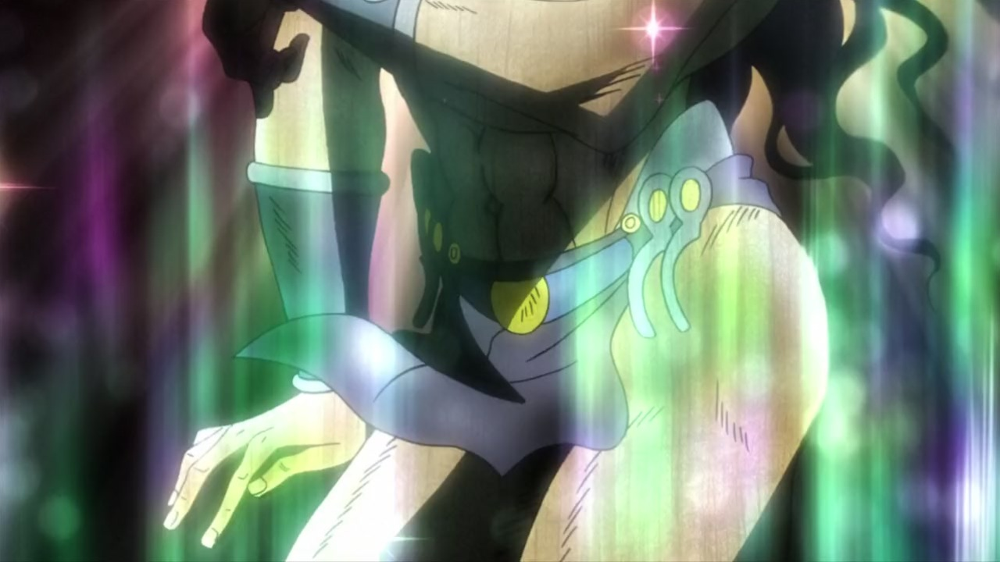
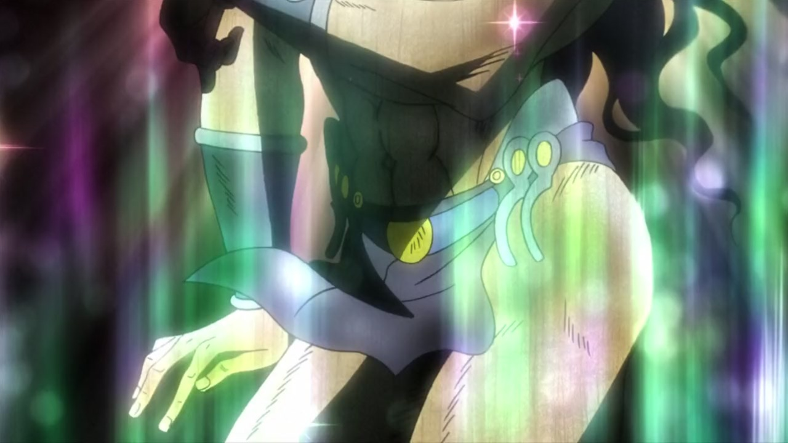
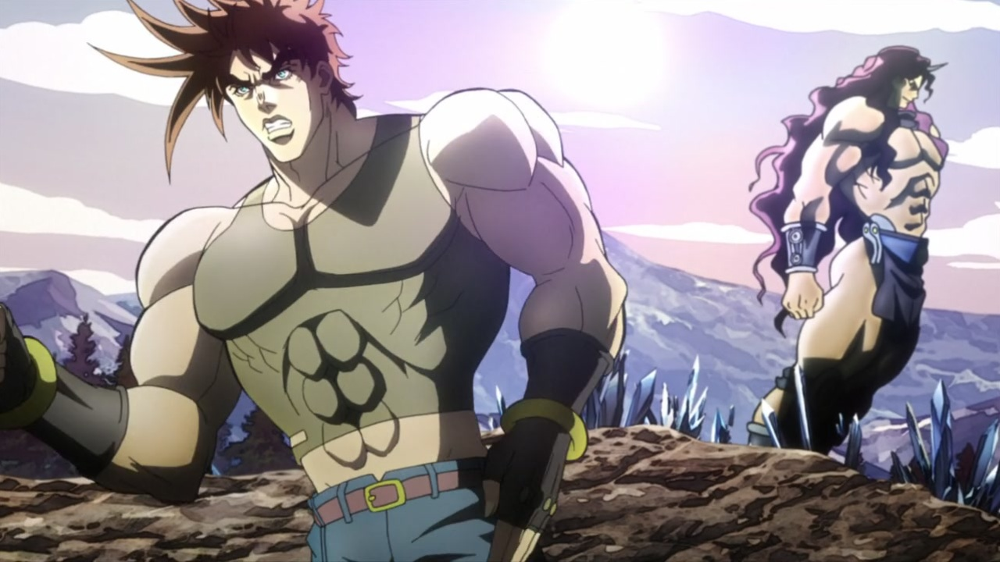
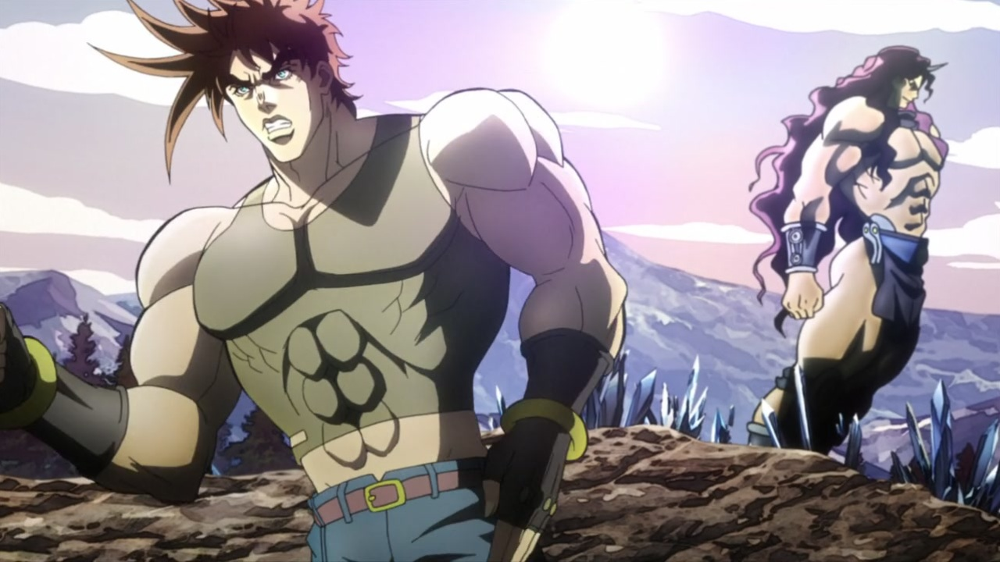

Why, hello again, good people! Fancy seeing you here… Do you come here often? Because I do. At least, lately. I trust you don’t have anything to object to that, yeah? I decided I’m going to finish Battle Tendency this week, so that I can finally, properly, actually tackle what I actually made this site for in the first place… Stardust Crusaders! So, without further ado… I hope you haven’t had enough of my comparisons, because today we’re going to take a look at episode #25 of Battle Tendency, “Birth of the Ultimate Being!”
Let’s get going!
- Today’s first difference is Kars, whom in this shot is smaller and has been recoloured. The smoke coming off of his right arm is also slightly different:
- Here, both Joseph and Lisa Lisa have been moved and retouched:
- Hello, uncle Weedspagon! Your lines are looking thicker, and your shading is much different:
- Only Araki could make a goddamn squirrel terrifying:
- Here, the shot is uncensored once again, there’s a distortion around the edges, the background is blurrier, there are more blood particles and there’s a dark vignette:
- And the camera also shakes around more:
- Death by squirrel (also a very good name for an indie death metal/dark cabaret band):
- Kars’ butterfly-hand flaps its wings more:
- Joseph is more centered here, and he’s also been retouched (although I preferred it when his nose was shaded):
- Kars is looking even sluttier here:
 

- Joseph has been redrawn, here:
 

- MORE MAKE-UP:
- Joseph has been redrawn again, here, and the background is also slightly closer:
- Joseph is looking different here as well, and the clouds have been moved a little too (I never understand why they do it! Why move the clouds by a little bit?):
- Back to Kars! Most lines in this shot are a little thicker, his face has been redrawn to comply a little more to the perspective, and the feathers on his headpiece are looking much better too
- Here, have a smattering of Josephs:
- A few frames are a little brighter, here:
- This bit is a little sharper, the colours are a little more saturated and the camera shakes a little bit more:
- And this is brighter and sharper:
- Almost everything in this scene has been moved, retouched or scaled up/down… The plane control has been removed entirely! Have a look for yourself:
- And again here (plus a different distortion):
- This scene is more zoomed in:
- Kars’ grizzly wounds have been uncensored here, there’s more blood particles, the wind effects are different and Kars has been also shaded differently:
- Here, have a closer look at that mangled body:
- And again here, plus a different overall shading:
- LEMME GIVE YOU A HAND:
- This animation is also a tiny bit sharper:
- And, to tie this comparison up, say hi again to 石本峻一 (Ishimoto Shun’ichi), added at the bottom here:
Whew! Another one done… One more to go! I’m aiming to finish everything by the end of the week, but I could be off by a couple of days, if the next episode is another giga mammoth like some of the past ones. But I doubt it! Usually finales are well-animated and need little to no touch-ups (not you, Stardust Crusaders). Well, in any case, see you next time!
Arrivederci!